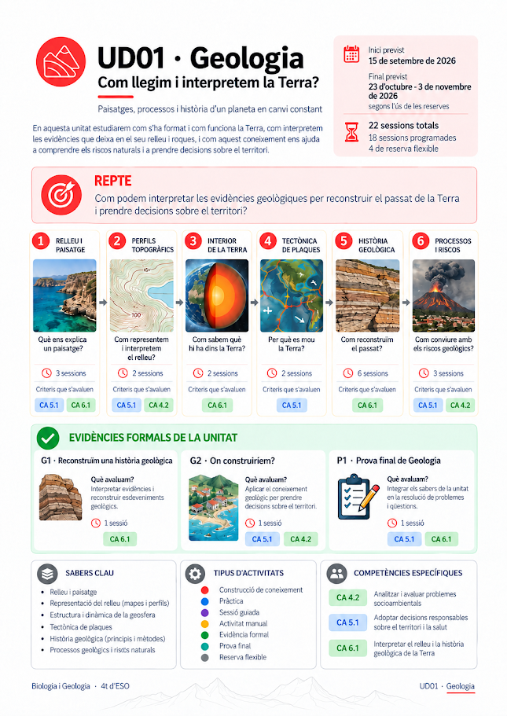
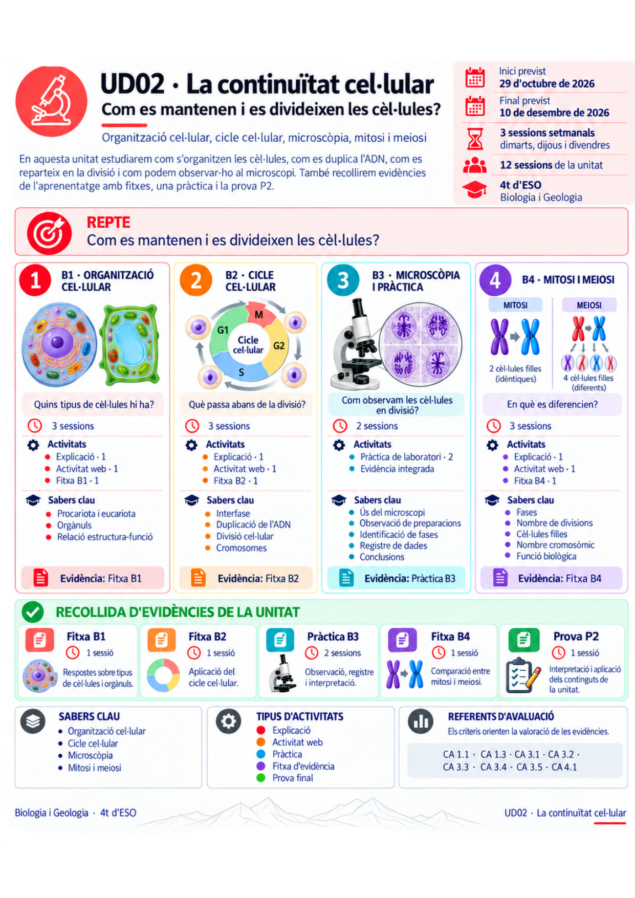
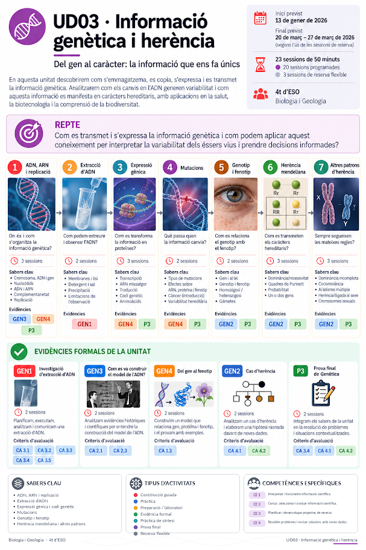
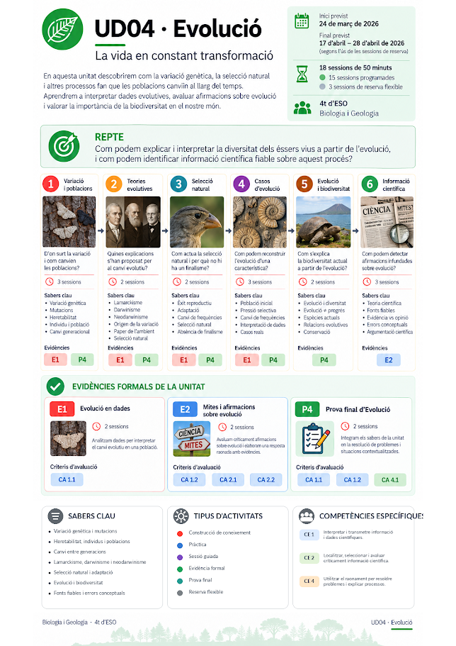
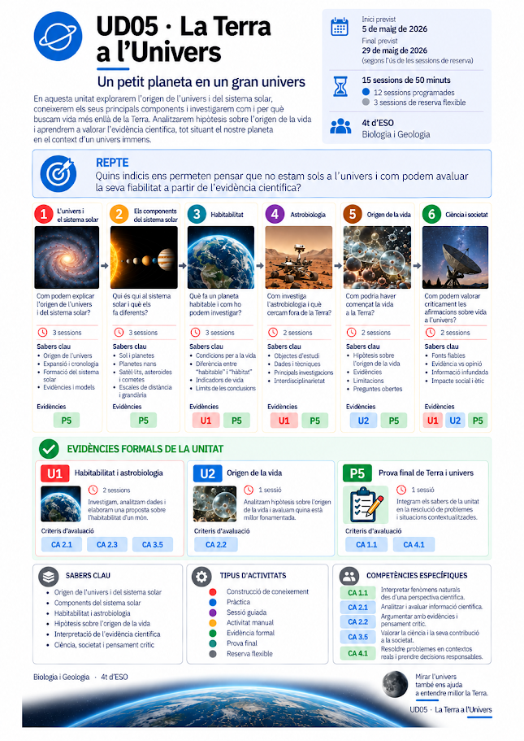

Calendari del curs¶
Biologia i Geologia · 4t d'ESO · 2026–2027
Aquest calendari presenta el recorregut de les cinc unitats didàctiques, organitzades en tres trams del curs. Cada unitat inclou una infografia ampliable, la distribució de sessions i un accés als materials o a la programació.
Organització del curs
La distribució del curs comprèn 93 sessions de 50 minuts: 78 sessions programades i 15 de reserva flexible. Les classes es fan habitualment els dimarts, dijous i divendres.
Primer trimestre · De setembre a desembre¶
Estudiam el planeta i les cèl·lules: com interpretam la Terra i com es manté la vida.
37 sessions · 2 unitats

UD01 · Geologia¶
Interpretam paisatges, models de la Terra i processos geològics per reconstruir el passat i valorar els riscs.
22 sessions · 18 programades + 4 de reserva

UD02 · La continuïtat cel·lular¶
Estudiam les cèl·lules, la duplicació de l'ADN, la divisió cel·lular i la microscòpia.
15 sessions · 13 programades + 2 de reserva
Segon trimestre · De gener a març¶
Exploram com s'organitza, s'expressa i es transmet la informació genètica.
23 sessions · 1 unitat

UD03 · Informació genètica i herència¶
Analitzam com s'emmagatzema, s'expressa i es transmet la informació genètica.
23 sessions · 20 programades + 3 de reserva
Tram final de curs · De març a maig¶
Investigam l'evolució de la vida i situam la Terra dins l'univers.
33 sessions · 2 unitats

UD04 · Evolució¶
Interpretam dades evolutives i contrastam explicacions sobre el canvi de les poblacions.
18 sessions · 15 programades + 3 de reserva

UD05 · La Terra a l'univers¶
Exploram l'univers, el sistema solar, la recerca astrobiològica i les hipòtesis sobre l'origen de la vida.
15 sessions · 12 programades + 3 de reserva
Com llegir el calendari?¶
Les unitats segueixen l'ordre UD01 → UD05. Les infografies es poden ampliar seleccionant-ne la imatge. Els nombres de sessions inclouen les reserves flexibles.
Per consultar els continguts, les activitats i les evidències d'avaluació, accedeix a la programació didàctica.